Operating Documentation
Direction 5133315-3, Rev# 14
Signa EXCITE HD 1.5T Service Methods
Module Version 1.0, Version Date 5/3/07
Operating Documentation |
| Required Persons | Preliminary Reqs | Procedure | Finalization |
|---|---|---|---|
| 2 | Not Applicable | 4 mins | Not Applicable |
This direction provides the necessary steps to install a SRI–III in place of a SRI-I or SRI-II. Instructions for installing or replacing Dual-temperature Sensor Cable and the Magnet display cable are also included.
| Last Update | 03/18/2005 |
| Item | Qty | Effectivity | Part# | Manufacturer | |
|---|---|---|---|---|---|
| Standard Hand Tool Set | 1 | - | - | - | |
| Electric Drill | 1 | - | - | - | |
| Drill bit, 7 mm (5/16 inch) | 1 | - | - | - | |
| Item | Qty | Effectivity | Part# | Manufacturer |
|---|---|---|---|---|
| Copper tape (for replacement only) | 1 | - | - | - |
| 2” x 4” piece of wood (approximately 18 - 20 inches long) or equivalent to hold up the bridge | 1 | - | - | - |
| Silicone Sealer RTV. obtained locally | 1 | - | - | - |
| Item | Qty | Effectivity | Part# | Manufacturer | |
|---|---|---|---|---|---|
| SRI-3 upgrade kit | 1 | - | 5121793 | - | |
| SRI-3 Assembly | 1 | - | 5105270 | - | |
| ||||
| Strong Magnetic Field! | ||||
| Ferrous materials can become dangerous projectiles in the presence of the magnetic field Produced by the Signa Magnet. | ||||
| FERROUS MATERIAL HAZARD! DO NOT DRILL, HAMMER, CHISEL, ETC. OR USE ANY FERROUS TOOLS IN MAGNET ROOM UNLESS MAGNET IS RAMPED DOWN! |
| ||||
| ELECTROCUTION Hazard! | ||||
| Dangerous voltages are present around the Magnet Subsystem when energized. | ||||
| LOCK AND TAG OUT POWER TO THE magnet room BEFORE STARTING WORK. See section 4-1 of this document. |
| ||||
| Strong Magnetic Field! | ||||
| It is not possible to safely operate electrical tools near the magnet. The attraction these tools have to the magnet makes them potential projectiles endangering human and or equipment. | ||||
| The magnet end bell must be removed from the magnet room before drilling holes for the sensors. |
Shut down the software on the host computer and then turn off the power to it.
Remove the cover from the front of the ACGD cabinet, See Illustration 1.
Illustration 1: Breaker Location
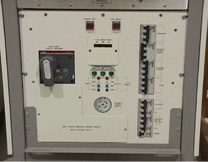
Rotate the main breaker on the ACGD/PDU labeled INPUT counter-clockwise to the green, O (OFF) position. See Illustration 2.
Illustration 2: Main Input Breaker In The Off Position
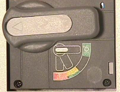
Locate the (Main Power Disconnect) feeding the PDU. De-energize and secure it using LOTO procedure MR60615.
Attempt to re-apply power to the PDU. Rotate the main breaker on the Gradient/PDU labeled INPUT clockwise to the RED, 1 (On position).
Press the [Emergency Off] Reset Switch.
If the PDU does not power up (Verify that the 3 phase indicator lamps on the front of the power distribution unit (Illustration 3) are not illuminated) proceed to the next step. If the cabinet powers up, the proper Main disconnect has not been located. Repeat steps from Step 4 until the PDU does not power up.
Illustration 3: PDU (Front Cover Removed)
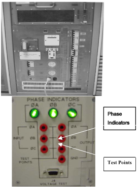
Rotate the main breaker on the PDU labeled INPUT counter-clockwise to the green, O (OFF) position. See Illustration 4.
Illustration 4: PDU Main Input Circuit Breaker Locked And Tagged Out
Lock Out / Tag Out the PDU “INPUT” circuit breaker.
Press on the left-pointing arrow on the end of the handle to expose the location where the lock and tag can be placed.
Lock and tag out the PDU “INPUT” circuit breaker as shown in Illustration 4.
Confirm that the LEDs, visible from the front of the GP Module, SGAs, and SGA Power supply are dark. This indicates that power has been removed from these units.
Wait 5 minutes to allow energy to dissipate before moving to the next step.
Verify that all energy has been dissipated. Measure the power at the front panel 420 and 208 test points of the PDUs See Illustration 3 voltages should now be at 0vac
| NOTE: | The test points are 100 :1 ratio (208 Vac = 2.08 Vac 420Vac = 4.20Vac) |
SRI-3 requires a new Dual-temperature Sensor Cable (Part Number 5123812). This cable must be installed with the SRI-3 or System performance issues may occur. The Installation of this cable can be time consuming particularly for systems with WideOpen Enclosures. Follow the procedure below to test the cable before installing.
Remove the Dual-temperature Sensor Cable (5123812) from SRI-3 upgrade kit (5121793).
Refer to Illustration 5.
Illustration 5: Dual-Temperature Sensor Cable Schematic
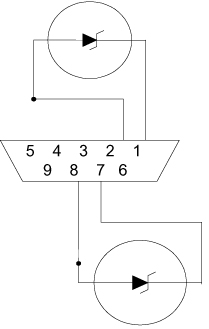
Connect a DVM (With diode test function) as indicated. You may need to insert an extra connector, or use paper clips to reach the contacts in the connector.
Measure Forward / Reverse polarity in the Diode Test mode. Confirm the cable measurements with Table 1.
Table 1: Forward / Reverse Polarity Specs
| Measure using Diode Mode | Positive Lead | Negative Lead | Reading (volts) |
| Sensor 1 (Forward Bias) | Pin 2 | Pin 1 | ~ 0.59 |
| Sensor 1 (Reverse Bias) | Pin 1 | Pin 2 | ~ 1.67 |
| Sensor 2 (Forward Bias) | Pin 8 | Pin 7 | ~ 0.59 |
| Sensor 2 (Reverse Bias) | Pin 7 | Pin 8 | ~ 1.67 |
With the DVM set to measure resistance verify there is no continuity (No Connection) from pin 2 to 5 or from pin 8 to pin 9
If your system has WideOpen Magnet Enclosure, proceed to Procedure For WideOpen Magnet Enclosure.
Table Removal and Carriage Positioning:
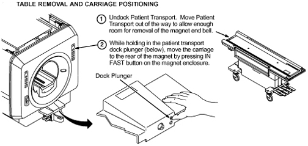
Removal of Enclosure Covers:
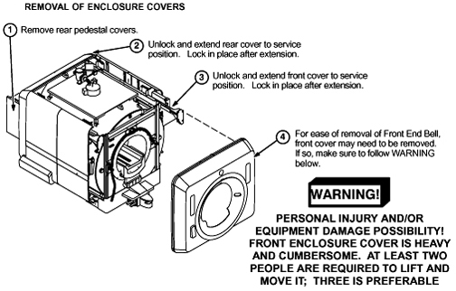
Removal of Front End Bell Panel:
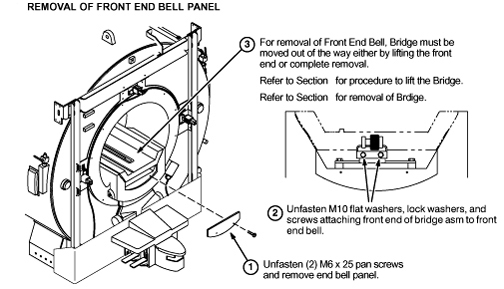
Lifting Front End Of Bridge:
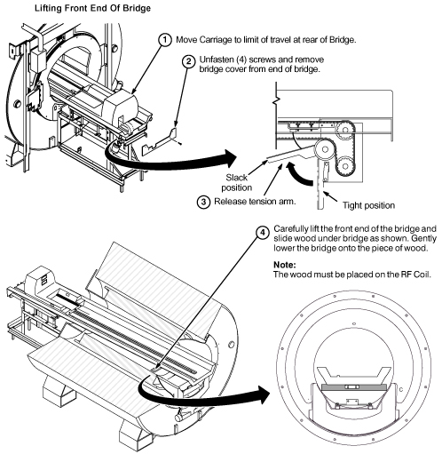
Removal of Bridge
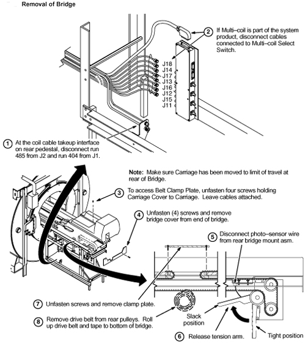 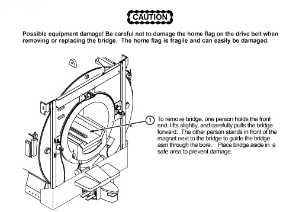
Remove Existing Run 749, Temperature sensor Cable:
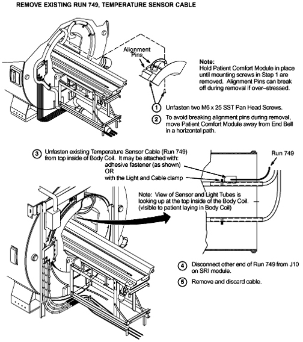
Front End Bell Removal:
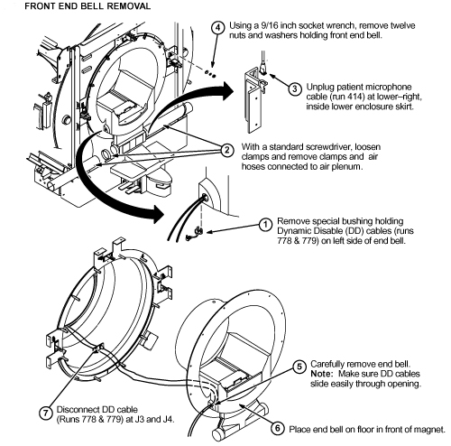
Preparation Of End Bell For Installation Of Dual Thermal Sensor Cable:
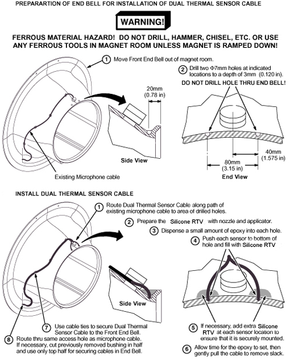
Pull the magnet front cover forward, as the SRI is located on the top-right section of the magnet enclosure. Refer to Illustration 6 and Illustration 7.
Illustration 6: SRI Module Location for Standard Magnet Enclosure
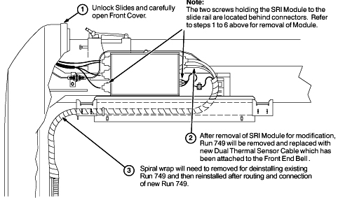
Illustration 7: SRI Module Location for CX Magnet Enclosures
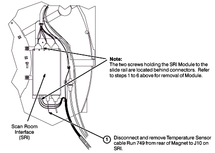
Carefully release the three fiber optic cables from their connectors on the SRI PCB and pull the cables free from the SRI module.
Disconnect the remaining cables attached to the SRI.
Remove two screws holding SRI to rail or bracket. See Illustration 8.
Illustration 8: SRI Location
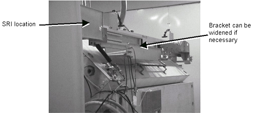
Remove the existing SRI
Verify switch settings on the SRI-3 for LCC magnet configuration. Switches should be set as shown in Illustration 9.
Illustration 9: SRI-3 Switch Setting Systems without Coil ID
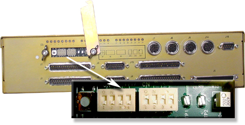
Install the replacement SRI-3 using the supplied bracket.
If needed widen the slot that seats the SRI. The slot width may need to be increased due to the increased width of the new SRI-3.
| NOTE: | The next two steps are for from SRI-I to SRI-3 upgrades only. |
Totally remove the cable that runs between the SRI-I and the magnet display by undoing the cable ties.
Install the replacement cable that arrived with the SRI-3 between magnet display and SRI-3.
Reverse the Front End Bell Removal procedure ( Bridge Handling Options Prior to Removal of Front End Bell, Step 4) to reinstall the end bell.
Bridge Replacement
Depending on which method was used, Lifting the Front of Bridge ( Bridge Handling Options Prior to Removal of Front End Bell, Step 1) or Removal of Bridge ( Bridge Handling Options Prior to Removal of Front End Bell, Step 2), reverse the procedure to reinstall bridge.
Make sure the tension arm is moved to the “Tight Position” at completion.
Install covers on rear Pedestal.
Proceed to Finalization, Step 1.
| ||||
| Strong Magnetic Fields! | ||||
| It is not possible to safely operate electrical tools near the magnet. The attraction these tools have to the magnet makes them potential projectiles endangering human and or equipment. | ||||
| The magnet end bell must be removed from the magnet room before drilling holes for the sensors. |
| ||||
| WideOpen Enclosures receiving this kit and upgrading from SRI-II may already have a dual Temperature Sensor Cable installed. SRI III requires Dual-temperature Sensor Cable (Part Number 5123812). Perform the Functional Check of the Dual-Temperature Sensor Cable Functional Check of the Dual-Temperature Sensor Cable on the cable in the system to confirm if a cable upgrade is necessary. If the dual temperature Sensor Cable does not need to be replaced, and the upgrade is from SRI-2 to SRI-3, proceed to Replacing the SRI-1 or SRI-2 Module with the SRI-3. | ||||
The SRI can be located under either the right or left side of the magnet enclosure. Identify which side the SRI is on by locating the patient leads; the SRI will be on that side. See Illustration 10 and Illustration 11.
Illustration 10: SRI Module Location (Front View)
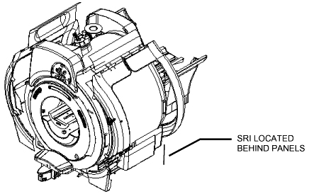
Illustration 11: Alternate SRI Module Location (Rear View)
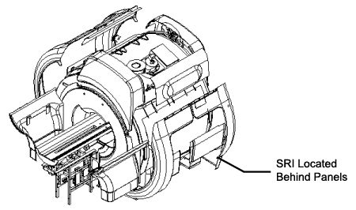
Turn latches in holding tray in place. Slide tray out far enough to gain access to the SRI cables.
Remove J10 (Run 749) from the SRI Module. Refer to Functional Check of the Dual-Temperature Sensor Cable to check if you have a functional Dual-temperature Sensor Cable already in your system.
If the measurements fails, proceed to Patient Bridge Removal to install the cable included in the kit. If the cable measurements passes, Reconnect J10 then proceed to Replacing the SRI-1 or SRI-2 Module with the SRI-3.
Undock the patient transport. Move the patient transport out of the way to allow enough room for removal of the magnet end bell.
Remove the rear pedestal covers.
Lift the tension arm to release tension from carriage drive belt (see Illustration 12).
Illustration 12: Right (As Viewed From Rear) Side View Of Rear Pedestal
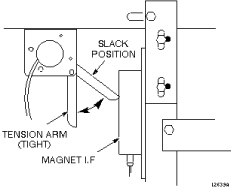
| ||||
| Possible equipment damage! Be careful not to damage the home flag on the drive belt when removing or replacing the bridge. The home flag is fragile and can easily be damaged. | ||||
Use an allen wrench to remove four M6 bolts holding down bridge. Two of the bolts are in the front of the bore and two bolts are in the back of the bore (see Illustration 13).
Illustration 13: Bridge Mounting Bolts
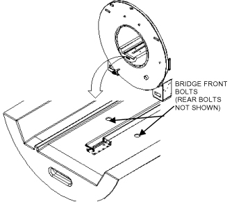
Carefully lift the front end of the bridge and slide wood under bridge as shown in Illustration 3-6. Gently lower the bridge onto the piece of wood.
Illustration 14: Placement Of Wood To Support Bridge
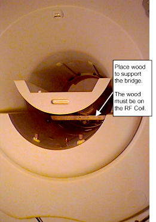
| NOTE: | There are three control panels on the front end bell. Only the top center control panel is removed for this procedure. |
The top center control panel is secured to the end bell by one of two methods, which are described in the following paragraphs. Visually inspect the end bell you are removing to determine which method is used.
If the central control panel is secured with push-on fasteners, use your fingers to gently pry the panel off the end bell.
If the central control panel is secured by two half-turn latches that are accessed with a 3mm allen wrench, insert the allen wrench into each access hole and turn counterclockwise ½ turn to release the control panel as shown in Illustration 15.
Illustration 15: Control Panel Locations (Earlier Revision End Bells)

| ||||
| Before disconnecting connectors make sure there is a label that identifies the cable and corresponding connector it is attached to, on the board. Connecting the wrong cable will result in severe damage to the board/hardware. | ||||
Lift the center control panel out and disconnect the three SCSI type II connectors shown in Illustration 16. It is not necessary to disconnect the other two connectors.
Illustration 16: Center Control Panel Detail
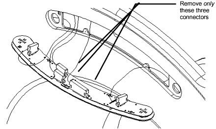
Disconnect J10 at the SRI module.
Remove the front enclosure covers. See Illustration 17.
| NOTE: | For the two large side enclosure covers, it is not necessary to remove all five securing bolts at the top of each cover. For each of these covers, remove the three bolts closest to the front, and loosen the two rear bolts several turns. This allows enough play to allow removing and installing the end bell. |
Illustration 17: WideOpen Magnet Enclosure, Front View

Disconnect two latches connecting front-end bell and RF tube. See Illustration 18
Illustration 18: End Bell, Front View
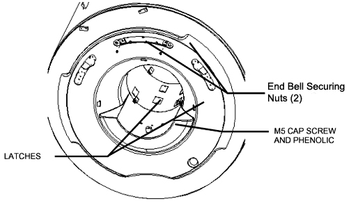
Remove M5 allen cap screw, screw spacers & phenolic spacers. See Illustration 18.
Remove two 17mm nuts securing front-endbell. See Illustration 18.
Remove front end bell by pulling top out past mounting studs, then lifting vertically to clear side panels and end bell inserts, then pulling out the rest of the way.
| ||||
| Strong Magnetic Field! | ||||
| Ferrous materials can become dangerous projectiles in the presence of the magnetic field Produced by the Signa Magnet. | ||||
| FERROUS MATERIAL HAZARD! DO NOT DRILL, HAMMER, CHISEL, ETC. OR USE ANY FERROUS TOOLS IN MAGNET ROOM UNLESS MAGNET IS RAMPED DOWN! |
Remove the end bell from the magnet room.
Cut the cable ties securing the existing thermal sensor cable to the end bell.
Cut the thermal sensor cable about two feet away from where it exits the thermal blanket.
Pull back the thermal blanket to expose the thermal sensor.
Remove the bracket directly under the thermal sensor by removing the M3 allen cap screw securing the bracket to the end bell.
| ||||
| Possible equipment damage! Be careful not to damage the end bell when using the hammer and chisel. | ||||
Use the hammer and chisel to carefully remove the adhesive that secures the sensor to the back side (magnet side) of the end bell. Use a 6 mm diameter socket-head cap screw or bolt to punch out the existing thermal sensor. See Illustration 19. (This hole will be re-used for one of the new thermal sensors.)
Illustration 19: Punching Out The Old Sensor
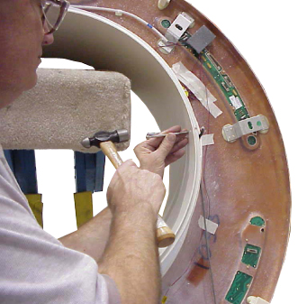
Refer to Illustration 20 for the location of the second hole. Use the permanent marker to mark the location for the second sensor hole. Drill the new hole using a 7 mm or 5/16 inch drill bit. Drill out the old hole using the same bit.
Illustration 20: Sensor Location, WideOpen (LCC) Magnet
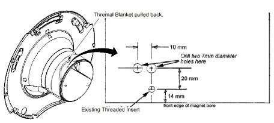
Use electrical tape or duct tape to fasten the Dual-Head sensor cable to the old (cut) thermal sensor cable in preparation for pulling the new cable under the thermal blanket. See Illustration 21.
Illustration 21: Routing The Replacement Cable
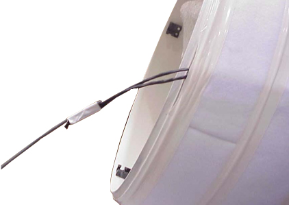
Carefully pull the new cable through the route used by the old thermal sensor cable.
| NOTE: | Be aware that there is a flap of thermal blanket that the sensor can get caught on. Place your hand under the blanket and guide the sensor past this obstacle. |
Place a piece of electrical tape or duct tape on the patient side of the end bell to cover both holes. Masking tape may be used if necessary. See Illustration 22.
Illustration 22: Taping Over The Holes
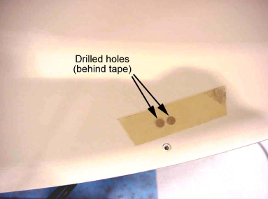
Squeeze a moderate amount of RTV adhesive in both holes.
Install the two new sensors into the holes so that the sensors are flush with the tape. Do not allow the sensors to protrude past the finished surface (patient side) of the end bell.
Add extra RTV adhesive at the back of each sensor to ensure that it is securely mounted.
Allow time for the RTV adhesive to set, and then gently pull the cables to remove the slack. The cables must lay flat when pulled taut. This is critical to allow the end bell to fit back on.
Use cable ties to secure the thermal sensor cable to the end bell.
The next two steps are for from SRI-1 to SRI-3 upgrades only.
Totally remove the cable that runs between the SRI-1 and the magnet display by undoing the cable ties. See Illustration 23.
Illustration 23: Remove Cable from SRI-1 and Magnet Display
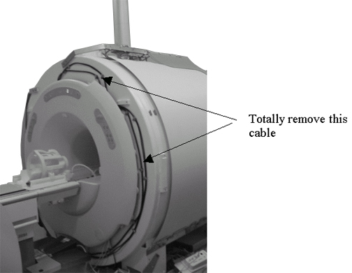
Install the replacement cable that arrived with the SRI-3 between magnet display and SRI-3.
When re-installing the covers, be sure to follow the following gap specifications:
All enclosure component seams and gaps visible to the operator and patient shall be less than 0.25 inches (6.35 mm). Exceptions may be made in areas where esthetic visual enhancement of the component gap is required by industrial design.
The gap at the seam between the enclosure and RF coil shall not exceed 0.125 inches (3.175 mm).
Gap uniformity along any continuous seam shall be + - 0.0625 inch (1.59mm).
Reverse the Magnet End Bell Removal procedure (End Bell Removal) to reinstall the magnet end bell.
| ||||
| Possible equipment damage! Be sure to connect the Control Panel cables to the correct connectors! | ||||
Connect the SCSI connectors to the control panel circuit board.
Secure the control panel to the end bell.
Remove the wood that was supporting the bridge. Position the bridge for mounting, but do not install the mounting bolts yet.
Install the covers removed or loosened in End Bell Removal. Where applicable, check for proper fit at edges of end bell.
Install the four bolts securing the bridge. See Illustration 24.
Illustration 24: Front Bridge Bolts
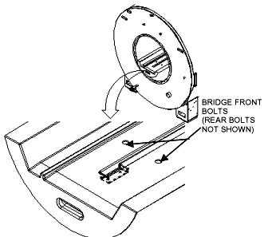
You may want to use a little RTV to seal the caps that hide the rear bolts shown in Illustration 24.
Push down the tension arm to apply tension to carriage drive belt (see Illustration 12).
Install covers on rear pedestal.
The SRI can be located under either the right or left side of the magnet enclosure. Identify which side the SRI is on by locating the patient leads; the SRI will be on that side. See Illustration 25 and Illustration 26.
Illustration 25: SRI Module Location (Front View)
Illustration 26: Alternate SRI Module Location (Rear View)
Remove the lower enclosure trim covers to expose the tray that holds the PAC and SRI.
Turn latches in holding tray in place. Slide tray out far enough to gain access to the SRI cables. See Illustration 27.
Illustration 27: PAC/SRI Tray
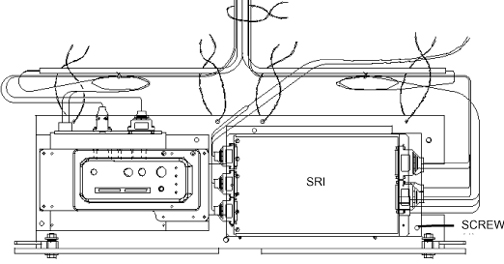
If copper tape is present on the SRI module cover, note all the locations where the tape was applied, then remove the tape.
Loosen the six captive screws securing the top cover of the SRI module enclosure, then slide the cover off.
Carefully release the three fiber optic cables from their connectors on the SRI PCB and pull the cables free from the SRI module.
Disconnect the remaining cables attached to the SRI.
Remove six screws holding SRI to tray. See Illustration 27.
Lift SRI Module off tray and remove from Magnet .
Verify switch settings on the SRI-3 for LCC magnet configuration. Switches should be set as shown in Illustration 1.
Illustration 28: SRI-3 Switch Setting Systems with Coil ID
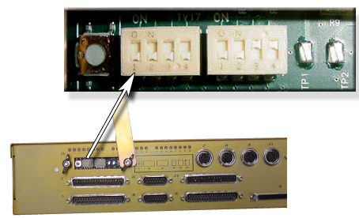
Install the SRI-3 into the tray.
Connect the remaining cables to the SRI-3.
Reinstall all covers on the magnet.
Remove Lock-Out Tag-Out equipment from the main disconnect box and energize.
Remove Lock-Out Tag-Out equipment from PDU and re-apply power to the ACGD Cabinet.
Rotate the main breaker labeled INPUT clockwise to the Red, 1 (ON) position
Press the Green Emergency Off reset button on the front of the PDU to power up the system.
Bring the Signa software back up.
Bring the PC software back up.
Confirm functionality of the SRI Board by running functional checks:
Setup a test scan to insure proper operation.